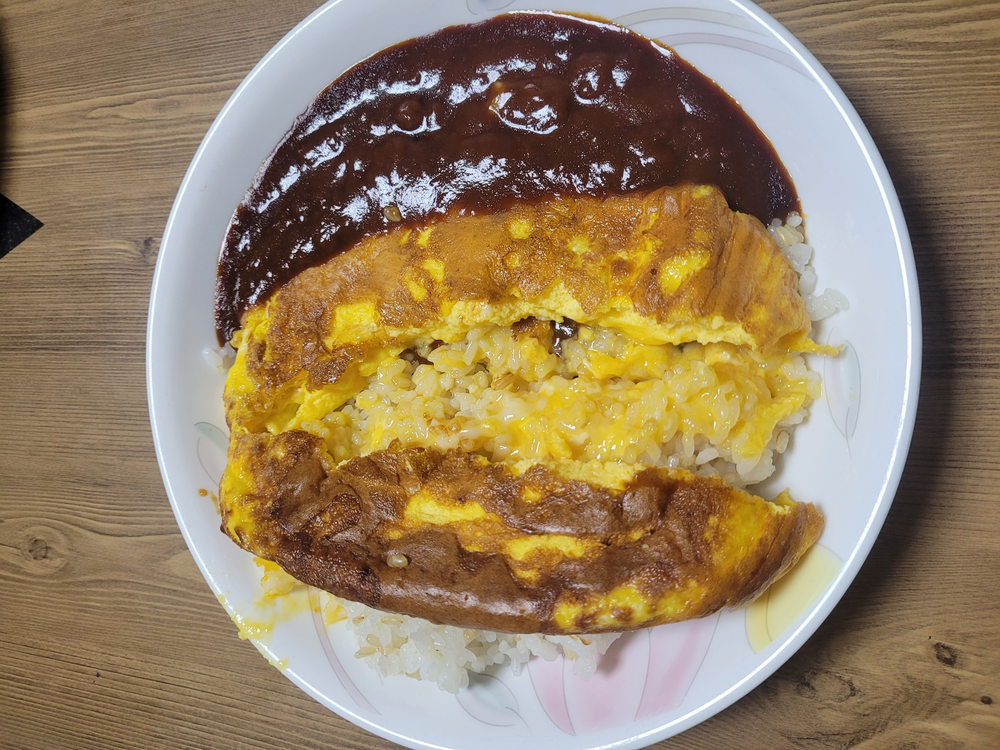
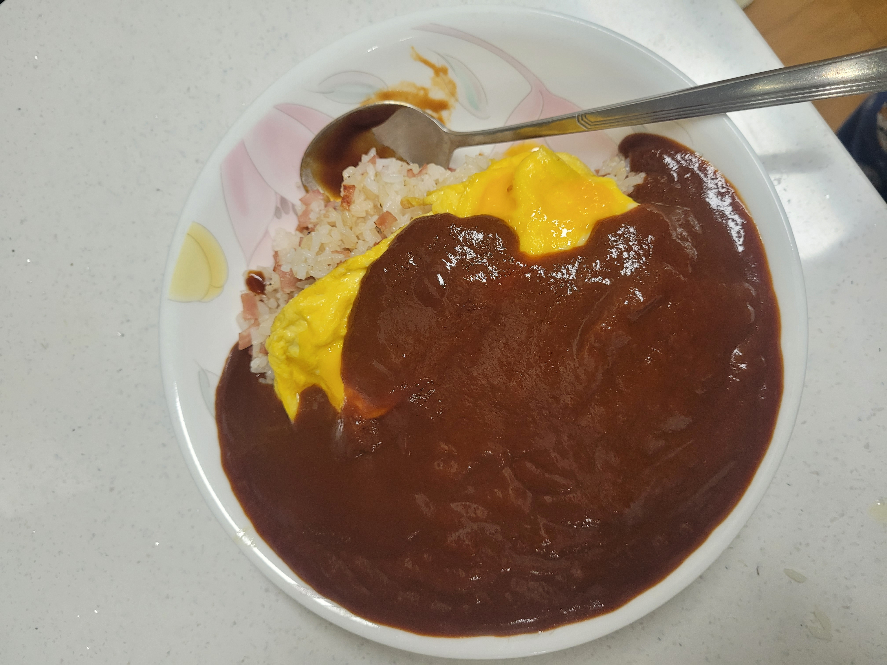
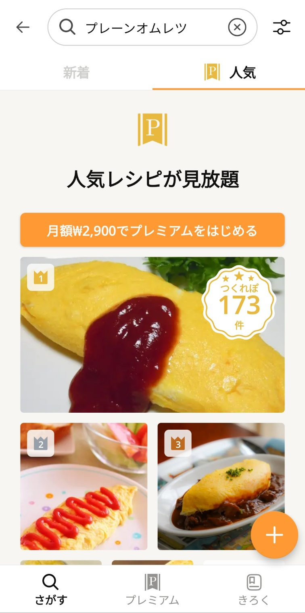
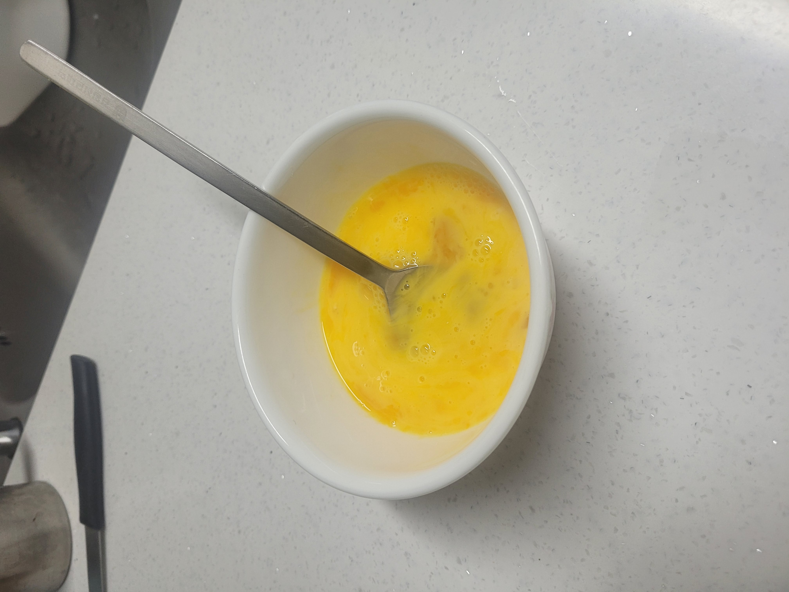
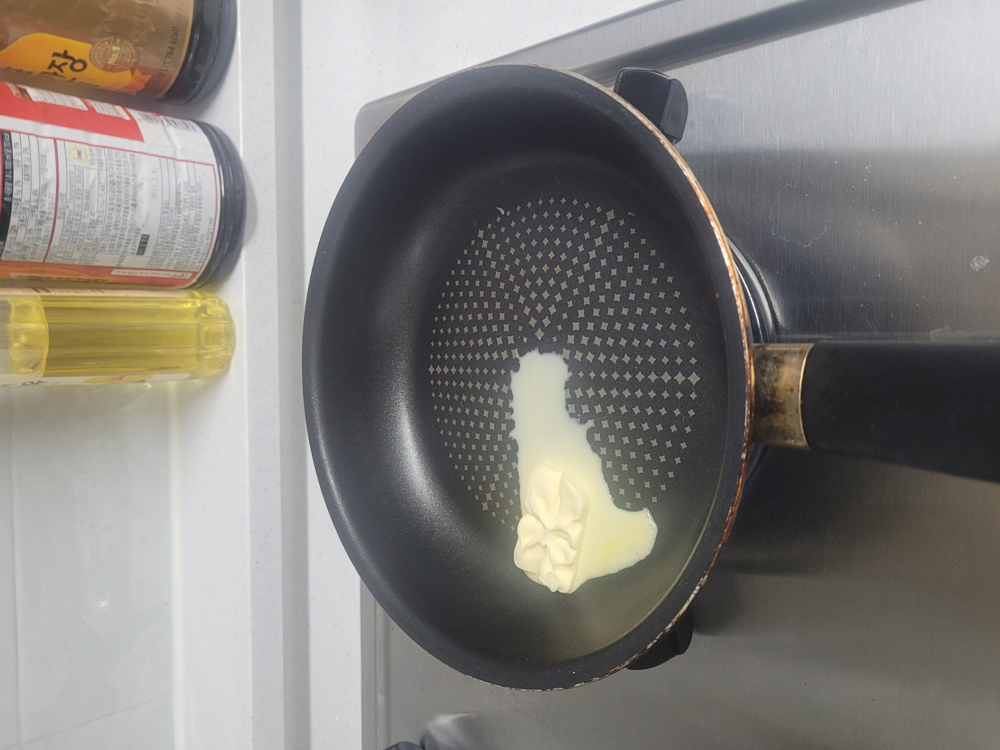
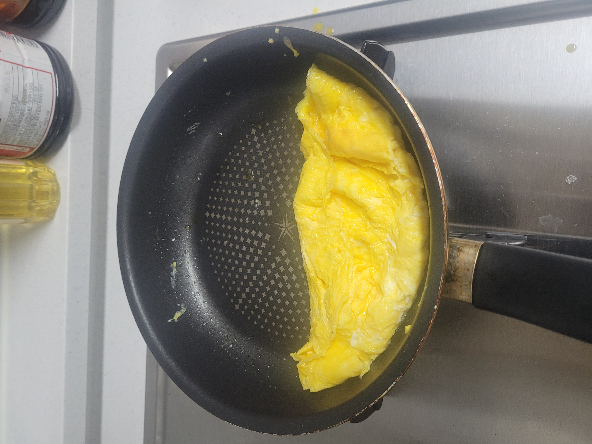
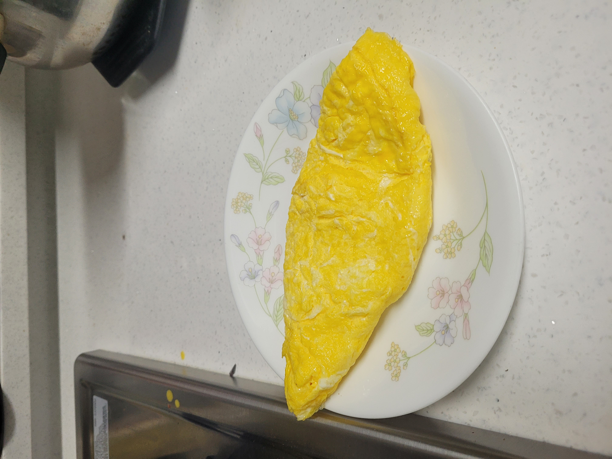

[25_05_09]クックパッドのレシピで「オムレツ」を作ってみた！
2025-05-09 | 日常
何回も失敗を繰り返してきた...
オムレツが茶色になったり、シェイプがダメだったり、焼きすぎてパサパサになったり
てっきり俺の問題だと思っていた...
ユーチューブやブログではあんなに簡単にできちゃうのに何で俺のオムレツは
いや、何で使った卵たちはかわいそうにこんな目に会わなきゃダメなんだ！！！

（去年の失敗作。ハヤシライス＆オムレツのはずなやつ）

（今年の失敗作。わざわざ見た目の悪い部分は隠して置いた笑笑）
元々はユーチューブやブログのレシピを参考にしてたけど、
確かに載ってる結果物の写真は望むところの理想郷だが、細かい説明が足りなかった。
塩や砂糖を「適当に」、「ほしいだけ」、「時間が経ったら」とかで書いて
いつも味も、焼き程度も動画やブログと違ってマズイ料理が出来上がってしまった。
特にオムレツのように韓国であまり人気のない料理ならレシピの投稿も結構少ない...
だが今日！新しい料理レシピのフラットフォームを見つけたのだ！その名は
クックパッド！
まずアプリをダウンロードして、アカウント登録を済ませた。
そして検索欄にプレーンオムレツを打ってレシピを探してみた。

正直、有料会員登録しないと人気順は見れないって、ちょっと酷いｗｗ
でも運が良かった。新着順のレシピでもいい情報が載っていたから。
参考になったレシピはこちら → https://cookpad.com/jp/r/24295524
そのレシピには火の調整やタイミングのことがシンプルだが的確で、詳しくできていた。
下は俺の料理の写真！

卵と牛乳を混ぜる

バターを溶かす

緊張して中程の写真はないが卵を加え、シェイプを作る
そして綴じ目が見えないようにする

完成！
こんなに簡単なことだったとは...
今回はマジで頼りになった。
今度レシピが必要なら絶対にクックパッドで探してみよう笑笑
レシピの投稿ありがとうございます春の菜さん！